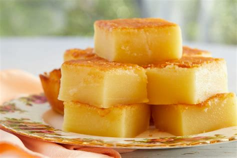

Golden Butter Mochi

Description
This recipe for mochi is an easy Hawaiian local-style
treat made with coconut and butter in a rice flour base.
A great dessert for any tropical themed party.
Ingredients
- 1 pound mochiko (glutinous rice flour)
- 2.5 cups sugar
- 1 tsp baking powder
- 1/2 cup flour
- ...
Instructions
- Preheat the oven to 350 degrees F (175 degrees C). Grease a 9x13 inch baking dish.
- In a medium bowl, whisk together the eggs, vanilla and milk. In a separate larger bowl, stir together the rice flour, sugar, and baking powder.
Pour the wet ingredients into the dry ingredients, and stir to blend. Mix in melted butter and coconut. Pour into the prepared pan.
- Bake for 1 hour in the preheated oven. Cool completely, then cut into squares to serve.